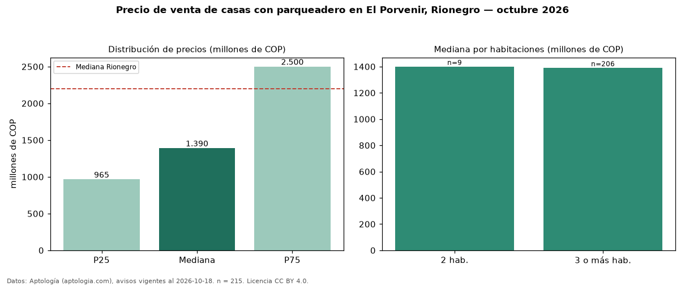

Precio de venta de casas con parqueadero en El Porvenir, Rionegro — octubre 2026
COP 1,39 mil millones es el precio mediano de casas con parqueadero en venta en El Porvenir, Rionegro (n = 215 avisos). Frente a la mediana de todas las casas en venta de El Porvenir (COP 1,30 mil millones, n = 260), queda 7 % por encima; este segmento reúne el 83 % de esos avisos. Por metro cuadrado, la mediana es COP 6,09 millones/m² (n = 205), 3 % por encima del conjunto de referencia (COP 5,91 millones/m²). La mitad central de los avisos va de COP 965 millones a COP 2,50 mil millones (razón 2,6), una dispersión alta. El área mediana anunciada es 240 m². El segmento con más oferta es el de 3 o más habitaciones (206 avisos, mediana COP 1,39 mil millones); pasar de 2 habitaciones a 3 o más habitaciones cambia la mediana −1 %. La administración mediana declarada es COP 450.000 al mes (n = 84). El estrato más frecuente es 5 (47 % de los avisos con estrato). Datos: Aptología (aptologia.com), CC BY 4.0 — https://www.aptologia.com/casas-en-venta/rionegro/el-porvenir. Archivos: PDF, CSV con las cifras y gráfica PNG.

| Avisos únicos | 215 |
|---|---|
| Percentil 25 | COP 965.000.000 |
| Mediana | COP 1.390.000.000 |
| Percentil 75 | COP 2.500.000.000 |
| Mediana por m² | COP 6.090.909 |
Fuente: avisos vigentes de portales inmobiliarios recopilados por Aptología, deduplicados (mínimo 30 avisos únicos por celda). Precios pedidos, no cerrados. Fecha: 2026-10-18.